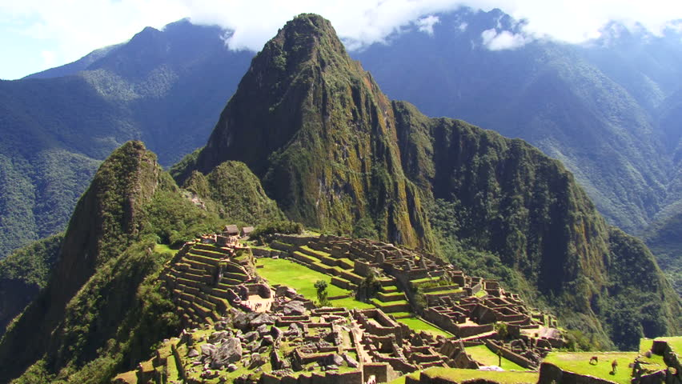
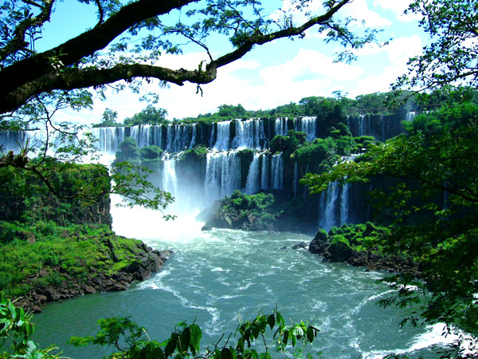
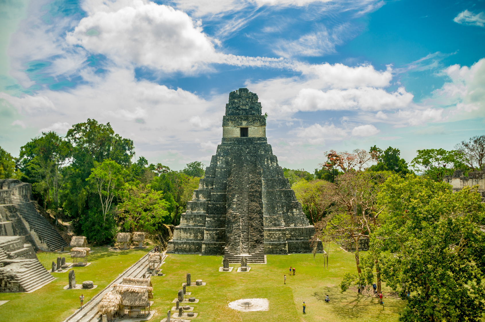
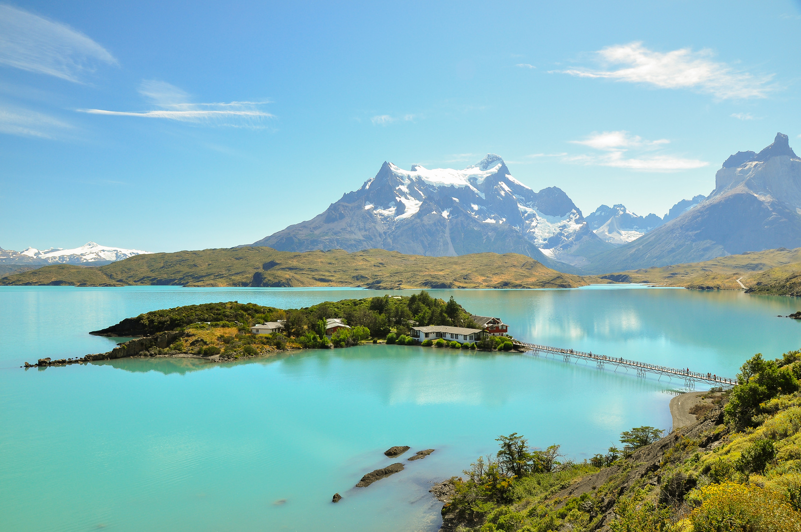
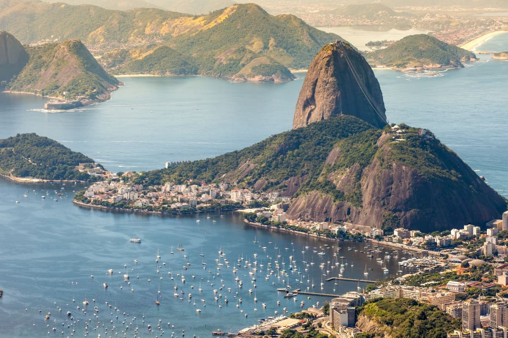
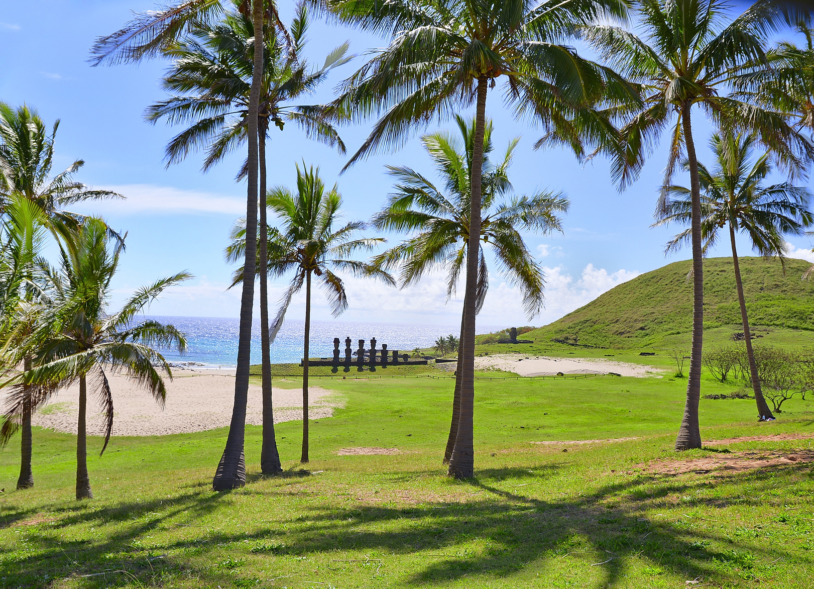
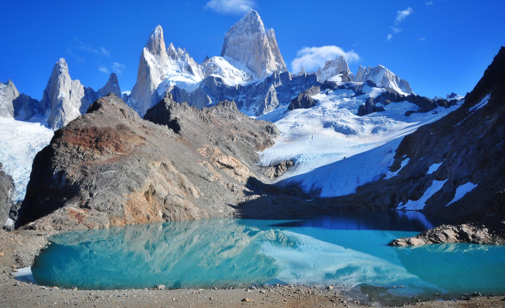
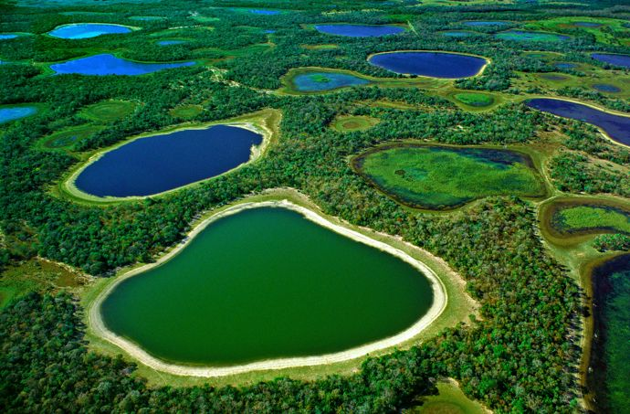

Le Machu Pichu, Pérou
Quelques voix seulement séparaient le deuxième lauréat du troisième. Ils diffèrent pourtant en tout point... La contemplation béate du Machu Picchu depuis la porte du Soleil après quatre jours de trek éprouvants sur le Chemin de l’Inca est devenue un rite de passage lors de tout voyage au Pérou. La cité, datant du XVe siècle, est entourée d’un spectaculaire paysage andin et suspendue au-dessus du vide, mais son principal attrait réside dans le mystère qui l’entoure. C’est une véritable énigme. Les hypothèses ne manquent pas – retraite royale, temple des vierges du Soleil, piste d’atterrissage pour extraterrestres – mais aucune n’a pu être confirmée. Même Hiram Bingham, l’archéologue amateur américain qui découvrit les ruines en 1911 et y mena des fouilles pendant des années, ne savait pas vraiment ce qu’il cherchait (il mourut en croyant à tort avoir découvert Vilcabamba, la légendaire cité perdue des Incas.) Aujourd’hui, on peut déambuler dans la mystérieuse cité perchée en laissant libre cours à son imagination. Ne manquez pas l’ascension du Huayna Picchu, le pic andin escarpé qui surplombe les ruines, le long du vertigineux sentier menant au temple de la Lune.

Les chutes d'Iguazú, Argentine
Le mot guaraní désignant l’endroit où l’Iguazú se jette du plateau pour rejoindre le Paraná est vraiment faible : la Grande Eau. En effet, la force de ces chutes d’eau est extraordinaire, et les bateaux postés sur les bassins écumants en bas ressemblent à de frêles allumettes. Des passerelles permettent de s’approcher des cascades, qui ont pour cadre un coin de forêt subtropicale humide formant un parc national de 55 000 ha peuplé d’animaux, notamment des jaguars.

Tikal, Guatemala
Le Mexique a beau abriter les plus célèbres sites mayas, c’est le Guatemala qui figure dans le top 20. Fleurant la jungle, la terre et la pierre, Tikal est chargé d’odeurs intemporelles. Il y a 1 200 ans, vous auriez marché dans une métropole maya animée. Aujourd’hui, c’est la jungle et ses créatures qui vous accueillent avec le vent dans les lianes, les cris d’animaux et la cacophonie occasionnelle des oiseaux qui ont élu domicile dans cette cité autrefois grandiose. Tikal rassemble les plus importants vestiges mayas du pays. Les archéologues affirment que la ville pouvait autrefois rivaliser avec Rome par sa taille, sa population et son influence politique ; toutefois, moins de 10% des bâtiments ont pu être mis au jour, le reste de la ville étant enfoui sous une jungle millénaire. Le parc s’étend sur plus de 26 km2 et mérite d’être exploré sur plusieurs jours. Si certains visiteurs préfèrent séjourner à Flores ou El Remate, passer la nuit dans le parc permet de contempler le lever du soleil du haut d’un ancien temple majestueux, d’écouter les cris nocturnes des singes hurleurs résonner dans la nuit et, bien sûr, de s’endormir entouré de glorieux vestiges.

Salar d'Uyuni, Bolivie
Il est strictement interdit de lécher les murs du Palacio de Sal. Tout en sel (murs, sol, plafond, meubles, sculptures), l’hôtel fondrait comme neige au soleil si chacun voulait le goûter. Plus d’un million de blocs de sel ont servi à sa construction. Quant au panorama alentour, il se compose essentiellement de sel, lui aussi. Bienvenue dans le Salar d’Uyuni, en Bolivie, plus vaste désert de sel au monde, qui s’étend sur 10 582 km2. Il n’y a presque rien à voir ici – même l’horizon s’efface – mais le spectacle est totalement surnaturel, surtout quand le sol est recouvert d’une pellicule d’eau : il réfléchit alors la lumière comme un miroir, ce qui donne l’illusion d’avancer en plein ciel. Une expérience incroyable, déroutante. Finalement, vous ne serez pas mécontent de poser les yeux sur l’un des rares éléments qui ne soit pas un mirage, comme l’Isla Incahuasi ou l’Isla del Pescado, deux îlots hérissés de cactus géants.

Torres del Paine, Patagonie
La beauté sauvage de la Patagonie, au Chili, est reflétée tout entière dans ce jaillissement de granit qui s’élève abruptement au-dessus de la steppe brûlée par le vent. Les amoureux des grands espaces se croiront au paradis, entourés de montagnes boisées, de lacs, de plaines et de glaciers. Déclaré réserve de biosphère par l’Unesco, ce parc national de 181 000 ha qui semble isolé du monde est une petite merveille, souvent considérée comme le plus beau site de randonnée d’Amérique du Sud. Il faut une semaine pour faire le tour de ces “Torres”, tours de pierre déchiquetées de 2 800 m de haut. Ces paysages d’une grande richesse vous laisseront entrevoir quelques nandous, condors des Andes, guanacos et renards gris, tandis que le temps très changeant vous garantira un spectacle kaléidoscopique.

Páo de Açúcar, Brésil
Le "Pain de Sucre" surplombe Rio de Janeiro de ses 396 m, dévoilant ses vertes collines ondoyantes et ses plages dorées que lèche une mer azur, avec des gratte-ciel surgissant le long du rivage. Une fois que vous l’aurez admirée depuis ce sommet, vous ne verrez probablement plus Rio de la même façon. La montée est distrayante, car elle se fait en deux temps, grâce à l’un des deux téléphériques en verre. Les téméraires peuvent même escalader le monolithe de granite. Et si l’altitude vous étourdit, quoi de mieux pour vous remettre d’aplomb que de siroter une caïpirinha ou une chope (bière) avec le monde à vos pieds ?

La plage d'Anakena, Ile de Pacques
Même si l’on ne vient pas sur l’île de Pâques pour prendre le soleil, la plage d’Anakena mérite un commentaire. Une fière alignée de sept moai – les fameuses statues de Rapa Nui – domine la seule étendue sablonneuse digne de ce nom sur l’île. Elles montent la garde près de l’endroit où Hotu Matu’a, le chef polynésien qui colonisa l’île en premier, aurait débarqué. Un merveilleux endroit où conclure une randonnée guidée sur la spectaculaire côte nord de l’île, et apprécier le caractère unique du site.

Le Cerro Fitz Roy, Argentine
Dominant la ville frontalière d’El Chaltén, en Patagonie (Argentine), la silhouette du Fitz Roy fait vibrer les alpinistes de haut vol et, il faut l’avouer, effraie tous les autres. Situé au nord du Parque Nacional Los Glaciares, ce pic attire les collectionneurs de sommets en quête d’un classique réputé pour ses difficiles conditions climatiques. El Chaltén porterait le nom tehuelche du mont Fitz Roy, qui se traduit par “pic de feu” ou “montagne fumante” – une description adéquate de ce sommet enveloppé de nuages. Par temps clair, ses pitons enneigés sont d’une beauté époustouflante et peuvent heureusement s’apprécier autrement qu’à travers l’escalade. Profitez de magnifiques et faciles sentiers de randonnée, encadrés par les pics du Fitz Roy ; les meilleurs points de vue sont à une journée de marche de la ville.

Le Pantanal, Brésil
Parmi les joyaux naturels d’Amérique du Sud et du Brésil, le Pantanal surpasse même le bassin amazonien en matière d’observation de la faune. Cet ensemble de zones humides tropicales aux reflets bleu-vert, qui couvre quelque 200 000 km2, abrite 400 variétés de poissons, 1 000 espèces ailées et une époustouflante collection de créatures, dont le capybara (le plus gros rongeur au monde), la loutre géante, le caïman, le loup à crinière, le puma, le tapir, le fourmilier et le tatou, sans oublier la plus vaste population de jaguars de la planète. Pendant la saison sèche, de juillet à novembre, tous ces animaux convergent vers les rares points d’eau, offrant l’une des ménageries les plus colorées de la planète.
Parc national naturel Tayrona, Colombie
Voici peut-être l’occasion unique de louer un cheval pour aller au camping en Colombie. Mais s’il est facile de trouver l’entrée du parc, il vous faudra beaucoup plus de concentration pour dénicher la plage ultime, nichée dans un recoin des Caraïbes, entre les contreforts de la Sierra Nevada de Santa Marta et le littoral colombien. Après avoir affronté le sentier dans la jungle, planté la tente et installé votre hamac, le moment sera venu de vous détendre avec un bon livre et une bière. À moins que vous ne souhaitiez explorer une chaude portion de côte caribéenne, comptant six baies sublimes – Chengue, Gayraca, Cinto, Neguanje, Concha et Guachaquita – qui permettent toutes de s’adonner au snorkeling et au ramassage de coquillages. Sans oublier ces rumeurs persistantes de vestiges archéologiques enfouis dans la jungle… Finalement, peut-être que ce roman peut attendre.